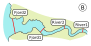
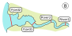
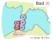
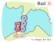
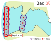
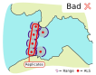

Index
The migration() function
The migration() functions builds on the same principles as the explore() function and, in addition, computes metrics under the assumption that the animals will move in a predictable direction.
migration() has the same arguments as explore(), and includes a set of new arguments aimed to fine tune the migration-related metrics. Like with explore, you do not need to start working with all arguments right away. For simple study areas, defining the tz is enough to get you going!
migration(tz = "Europe/Copenhagen")
Migration arguments
Study areas can differ considerably. The arguments within migration() allow you to capture that diversity!
migration(tz, section.order = NULL, success.arrays = NULL, max.interval = 60, minimum.detections = 2, start.time = NULL, stop.time = NULL, speed.method = c("last to first", "first to first"), speed.warning = NULL, speed.error = NULL, jump.warning = 2, jump.error = 3, inactive.warning = NULL, inactive.error = NULL, exclude.tags = NULL, override = NULL, report = FALSE, auto.open = TRUE, discard.orphans = FALSE, save.detections = FALSE, if.last.skip.section = TRUE, replicates = NULL, disregard.parallels = TRUE, GUI = c("needed", "always", "never"), plot.detections.by = c("stations", "arrays"))
Below are listed only new arguments that do not exist in explore.
section.order
For the migration() analysis, the order of the study area sections must reflect the expected order in which your animals will cross them. If a section.order is not provided, actel will order the sections by their appearance in the spatial.csv file. However, if you want to alter this default order, you can specify a given order using this argument. E.g. if you expect your animals to move from the river, to a fjord and ultimately to the sea (and you have receivers in all these ecosystems), then section.order = c("River", "Fjord", "Sea").
In the other hand, if you expect your animals to migrate upstream, then section.order = c("Sea", "Fjord", "River"). To learn more about how to organise your study area in an actel-friendly way, have a look at this manual page.
success.arrays
If a tag is last detected at an array listed in success.arrays, the respective animal will be considered to have successfully crossed the study area. By default, the last array of your study area is considered a success array. However, if you are not sure about your last array’s efficiency, you can define multiple success arrays (e.g. success.arrays = c("Sea1", "Sea2") ).
- Note:
- In multi-branch study areas with multiple endings, the last array of each ending is, by default, considered a success array.
if.last.skip.section
This option is best explained with examples. Let us assume we have a study area with four arrays: River1, River2, Fjord1 and Fjord2. Now, we have a tag that was last detected at River2. Should this animal be considered to have disappeared in the river or in the fjord? It comes down to how your stations are deployed in the field, and this is what if.last.skip.section is controlling for. Lets have a look at the two maps below.
 

On study area A, it seems reasonable that a tag last detected at River2 has likely died in the fjord, before reaching Fjord1. In this case, if.last.skip.section = TRUE.
However, on study area B, if a tag was last detected at River2, it most likely died somewhere in the river. In this case, if.last.skip.section = FALSE.
replicates
One of the main drawbacks of array efficiency calculations is that it can be tricky to estimate efficiency for arrays which have no valid efficiency peers (i.e. no other arrays that can be used as quality checks). However, if these “isolated” arrays are composed by two lines of receivers, one line can be used as a replicate of the other, which in turn allows for the estimation of intra-array efficiency. If this is your case, then you should make use of the replicates argument.
- Note:
- Array replication should only be performed if the replicate stations cover the same extent of the migration route section as the opposite stations, and only if the two lines of receivers are close to each other (i.e. one can assume 0% mortality between them). Have a look at the figures below for some examples.
 


Setting up the replicates argument
You must use the stations standard names (i.e. St.10, St.12) when referring to replicates. If you are not sure what the Standard names are, you can run loadSpatial() in the same folder as your spatial.csv file or loadSpatial(file = "path/to/spatial.csv") to check them out (see the “Standard.name” column).
Once you know which replicates you want to list for your array(s), you can include them in the analysis. Lets imagine you want to use stations St.1 and St.2 as replicates for the array River1, and St.3 as a replicate for array River3. This is how they should be listed:
Where […] stands for other arguments you want to specify in the function.
It is important that you list replicates using the list(Array = "Replicate") construction. Keep this in mind while you prepare the code.
disregard.parallels
This argument controls whether or not the presence of parallel arrays (in multi-branch analyses) should potentially lead to the invalidation of efficiency peers. This argument is a bit tough to explain in few words, so I recommend that you have a look at how efficiency is calculated in migration().
Now that you know how to run the migration analysis, you may want to:
Learn more about what migration() is doing